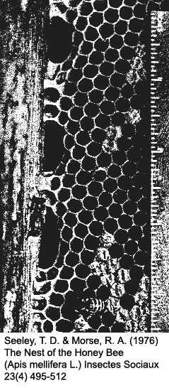
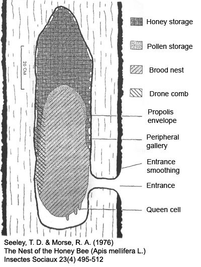

Natural Forest Feral Bee Nest
Bees above all are remarkably adaptive! Feral honey bee colonies in North America and Europe are found in hollow trees, caves, houses, barns, boxes and numerous man-made objects. Many conflicting theories and radical designs have resulted from the examination of these successful feral nests.
4
The following natural nest observations were made among feral honey bee colonies in unmanaged, natural forests in an agricultural region near Ithaca, New York, USA. The climate is humid, continental type with warm summers and long, cold winters.
2, 6
The nests studied were of a varied hydird of bees found in North America including
A. m. ligustica, A. m. caucasica, A. m. carnica, and
A. m. mellifera L. Only natural nests in hollow trees were studied.
6
NEST SHAPE
The typical natural bee nest occupied a cylindrical elongated cavity. The nest cavity and the nest inside the cavity were normally the same shape and size.
6
NEST ACCESS
Access to the nest was located 58% near the bottom, 24% near the top and 18% near the middle of the cavity. Single entrances were found in 79% of the nest and 21% of the nest had multiple entrances. The size of the average entrance hole was less than 40 cm
2 with the most frequent being between 10 to 20 cm
2. The average nest entrance height was 6.5 meters. Bees did not exhibit a clear preference of the entrance direction relative to the earth's magnetic field. The space in front of the nest entrance was usually clear and provided an open flight path.
6, 7
NEST SIZE
Nest cavity volumes frequently ranged between 30 and 60 liters and may reflect available cavity sizes, a preference in nest volume by bees, or an interaction of both.
5, 8, 3, 6
The median nest cavity volume was 45 liters. The mean cavity height was 156 cm. The mean cavity diameter was 22.7 cm. The mean height/diameter ratio of nests observed was 7.2.
6
COMBS
Before bees build combs within the cavity they scraped the loose, rotten wood off the walls exposing firm wood which they coated with propolis.
6
A nest normally contained up to eight combs which were usually planar with parallel alignment. In cavities 20 cm or less in diameter the combs spaned the cavities in orderly planes. In cavities with larger diameters the combs curved with small combs filling the spaces between curved combs.
6
The direction of planar combs was random with respect to both the nest entrance and the earth's magnetic field.
9, 6
It has been reported when bees are allowed to build combs without constraints they build in the same plane as the combs of the parent colony.
1

Combs were attached to the cavity along its top and sides intermittently with small passageways, known as peripheral galleries, along the comb edge. The bottoms of the combs hung free with several centimeters of open space below.
6
The average brood comb cell diameter (wall to wall) was 5.2 mm for worker cells and 6.2 mm for drone cells. The average brood comb cell depth was 11 mm for worker cells and 12.5 mm for drone cells. Honey comb cell size was variable with cells of various diameters and depths.
6

NEST CONTENTS
The organization of the nest reflected the pattern of comb attachment to the cavity walls and served to minimize internal stress within the wax combs. Honey was stored in the upper and peripheral nest regions near points of comb attachment. The lighter brood nest was below the honey and toward the center of the nest away from attachment points. Pollen was stored between brood and honey. The open space beneath combs permited elongate queen cells to project downward off the bottoms of combs.
6
In nests with the access located near the top the food may be stored below the brood. However, there has been no research to determine how common this occurs.
4
A predominant allocation of comb to food storage was observed. Average comb area observed was as 55% food, 25% brood and 20% empty. This emphasizes the need to store large quantities of honey to survive temperate zone winters.
6
References:
1 DE JONG, D. (1982) Orientation of Comb Building by Honeybees
2 DETHIER, B. E. & PACE, A. B. (1963) The Climate of Ithaca, New York
3 LINDAUER, M. (1955) Schwarmbienen auf Wohnungssuche
4 MORSE, R. A. (1975) Bees and Beekeeping
5 SCHMIDT, A. (1897) Zoologische und botanische Mitteilungcn
6 SEELEY, T. D. & MORSE, R. A. (1976) The Nest of the Honey Bee (Apis Mellifera L.)
7 SEELEY, T. D. (2010) Honeybee Democracy
8 WADEY, H. J. (1948) Section de chauffe
9 WERNER-MEYER, W. (1960) Wachs und Wachsbau-Kittharz
feral bee rescue
Updated 28-02-2014 | natural bees